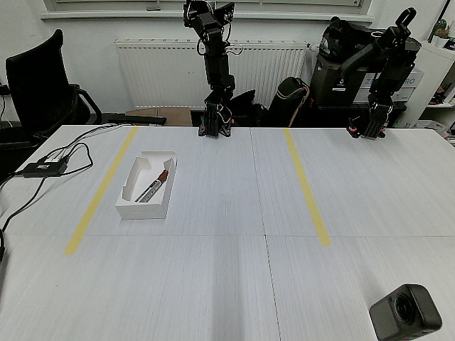
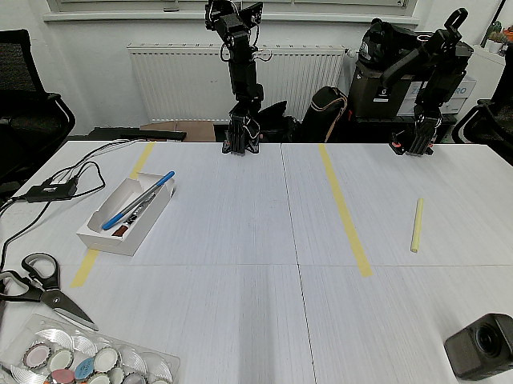
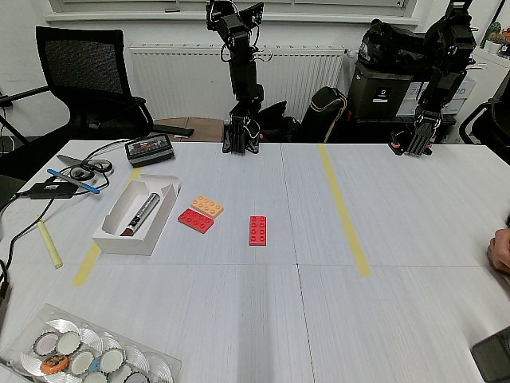
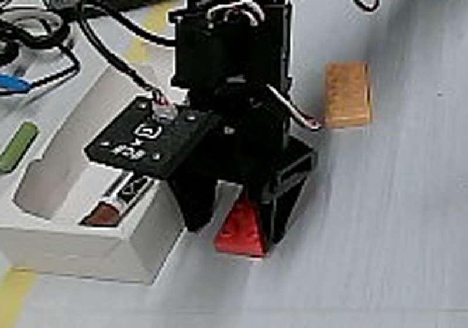

Honest note: only the teleoperation demos and one early failed attempt were filmed. The autonomous pen runs, the duster-and-caps run and the brick stacking were documented with photos and logs (no video) - the photos are the evidence. A video of a full autonomous run can be recorded with scripts/record_run.py.
Real arm - teleoperation demonstrations (leader arm drives the follower)
Demo take 2 - SUCCESS 76 s
A person moves the leader arm: marker picked up and placed in the white box. Used as the good training episode (LeRobot episode 0).Demo take 1 - FAILURE (placed wrongly) 132 s
Same task, placed wrongly. Kept as a labelled failure example, not for training as a success (episode 1).
Real arm - an early autonomous attempt that went wrong
First autonomous marker run - the arm pushed the box 52 s
The table mapping had x mirrored; the alignment loop moved the wrong way and the jaws pushed the white box. Found, explained and fixed the same evening (see results notes).
Simulation (MuJoCo twin built by the other agent)
Simulation - successful pick 18 s
From the 100-trial MuJoCo benchmark.Simulation - balance demo 3 s
Another simulation experiment in the repo.
Real arm - autonomous pen / marker into the white box (about 23 s from seeing the pen)
 First fully autonomous run: pen in the box (model check and photo).
First fully autonomous run: pen in the box (model check and photo).
Later run result. Retry loop: placed in the box; a hand takes it out to reset.
Retry loop: placed in the box; a hand takes it out to reset. Retry loop: the marker rests across the box (rim).
Retry loop: the marker rests across the box (rim).
Thin blue pen: held with a firmer grip, placed across the box.Real arm - magnetic duster collects metal bottle caps and goes into the box
Real arm - stacking the red brick on the yellow one (not finished)

Attempt: the red brick ended up beside the yellow one. Attempt: red on the yellow, but off-centre (1.5-4 cm table-level position error).
Attempt: red on the yellow, but off-centre (1.5-4 cm table-level position error).
Diagnosis photo: the jaws around the red brick at the grasp height.Data for training
LeRobot dataset v3.0 (datasets/elrobot_teleop, kept on disk, not in git): 2 episodes, 6445 frames at 30 fps. state = follower joints, action = leader joints, one table camera (640x480). Episode 0 = success, episode 1 = labelled failure - train on the success only. Source video was 8 fps (frames repeated to 30 fps).